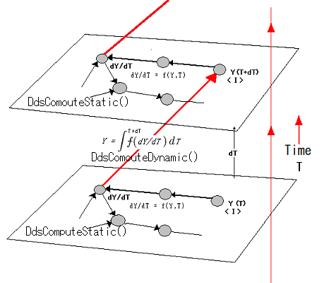

|

|
/* dy/dt = A(C-y) + B */
/* dy/dt(inf)==>0.0, y = (AC+B)/A */
/* Steady state y = 5.0 */
DDS_PROCESSOR p;
DDS_VARIABLE y, dydt, A,B,C, time, step;
DDS_VARIABLE* pVs, *pVr;
int i,j,nv, nr;
DdsCreateProcessor(&p, 10);
DdsAddVariableV(p, &A, "A", DDS_FLAG_SET, 1.0, NULL, 0);
DdsAddVariableV(p, &B, "B", DDS_FLAG_SET, 2.0, NULL, 0);
DdsAddVariableV(p, &C, "C", DDS_FLAG_SET, 3.0, NULL, 0);
DdsAddVariableV(p, &y, "y", DDS_FLAG_REQUIRED|DDS_FLAG_INTEGRATED, 1.0, NULL,1, &dydt);
DdsAddVariableV(p, &dydt, "dy/dt", DDS_FLAG_REQUIRED, 0.0, CompDYDT, 4,&A,&B,&C,&y);
time = DdsTime(p);
step = DdsStep(p);
pVs = DdsGetVariables(&nv, p);
for (i = 0; i < nv; ++i) {
pVr = DdsGetRhsvs(&nr, pVs[i]);
for (j = 0; j < nr; ++j) {
pVr[j] = *((DDS_VARIABLE*)pVr[j]);
}
}
DdsSetValue(step, 0.1);
DdsCompileGraph(p, 0);
for (i = 0; i < 11; ++i) {
DdsComputeDynamic(p,0);
printf("Dynamic:Time=%lf dydt=%lf y=%lf\n",
DdsGetValue(time), DdsGetValue(dydt), DdsGetValue(y));
}
DdsCompileGraph(p, DDS_STEADY_STATE);
DdsComputeStatic(p);
printf("Steady :Time=%lf dydt=%lf y=%lf\n",
DdsGetValue(time), DdsGetValue(dydt), DdsGetValue(y));
DdsDeleteProcessor(&p);
|
double CompDYDT(DDS_PROCESSOR p, DDS_VARIABLE y)
{
DDS_VARIABLE A = DdsGetRHSV(y, 0);
DDS_VARIABLE B = DdsGetRHSV(y, 1);
DDS_VARIABLE C = DdsGetRHSV(y, 2);
DDS_VARIABLE Y = DdsGetRHSV(y, 3);
double AV = DdsGetValue(A);
double BV = DdsGetValue(B);
double CV = DdsGetValue(C);
double yv = DdsGetValue(Y);
return AV*(CV-yv)+BV;
}
/* Computation results
Dynamic:Time=0.000000 dydt=4.000000 y=1.000000
Dynamic:Time=0.100000 dydt=3.619000 y=1.380650
Dynamic:Time=0.200000 dydt=3.274607 y=1.725071
Dynamic:Time=0.300000 dydt=2.962992 y=2.036717
Dynamic:Time=0.400000 dydt=2.681031 y=2.318706
Dynamic:Time=0.500000 dydt=2.425901 y=2.573860
Dynamic:Time=0.600000 dydt=2.195050 y=2.804734
Dynamic:Time=0.700000 dydt=1.986167 y=3.013638
Dynamic:Time=0.800000 dydt=1.797161 y=3.202662
Dynamic:Time=0.900000 dydt=1.626141 y=3.373699
Dynamic:Time=1.000000 dydt=1.471396 y=3.528459
Steady :Time=1.000000 dydt=0.000000 y=5.000000
*/
|